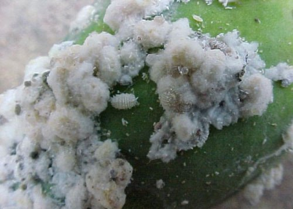

| Home |
| PEST OF COFFEE |
mAJOR PESTES |
| 1. White stem borer |
| 2. Red borer |
| 3. Shot hole borer |
| 4. Berry borer |
| 5. Green scale |
mINOR PESTES |
| 1. Mealy bug |
| Questions |
| Download Notes |
COFFEE :: INDEX :: PESTS OF COFFEE
Both Arabica and robusta coffee are attacked by about one dozen insect pests, only a few of which are serious, some of them being specific to one or the other variety. The coffee stem borer is the pest of Arabica coffee, whereas the shot hole borer prefers robusta coffee. In certain areas the severe attack of white stem borer leads to discontinuation of the crop.
